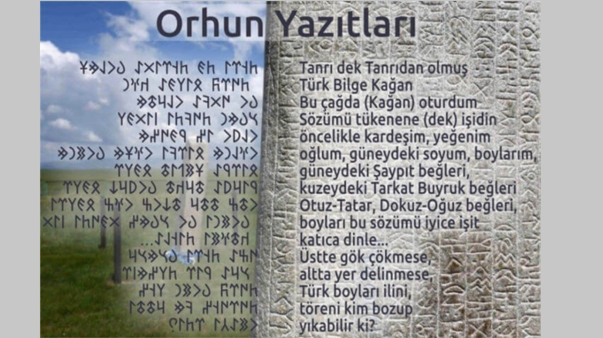
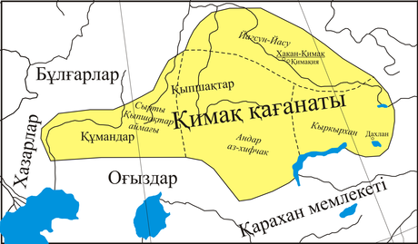
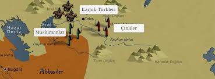
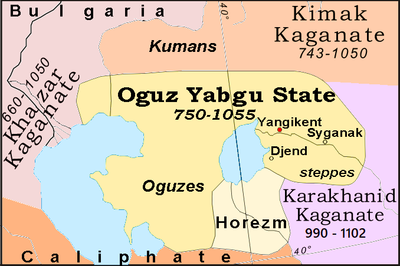

8.yy 701-800 yılları arasındaki süreçleri kapsamaktadır.
• 720-735

Ötüken'de Orhun Anıtlarının dikilmesi
Orhun yazıtları bu Türk hanedanı Bilge Kağan döneminin emanetleridir. Anıtlardan birincisini Kül Tigin’in ölümünden sonra ağabeyi Bilge Kağan tarafından 732 yılında, ikincisi olan Bilge Kağan abidesi de onun ölümüyle 735 yılında oğlu tarafından diktirilmiştir. Üçüncü abide olan Tonyukuk abidesi ise 720-725 senelerinde bizzat kendisi tarafından yaptırılmıştır. Aynı bölgede bulunan Orhun yazılı abide sayısı altı olsa da büyük ve mühim olanlar bu üç tanesidir. Kül Tigin abidesi esaretten kurtulup kağan olması ve devleti kuvvetlendirmesi sebebiyle kahraman kardeşine karşı Bilge Kağan’ın duyduğu saygı, minnet, hayranlık duygularını aynı edep ve coşkuyla anlatmasıdır. Burada önemli olan diğer bir mevzu da Bilge Kağan’ın abidelere yazıların kazınması ve dahi dikilmesi sırasında bizzat başında durup nezaret etmiş olmasıdır. Yani bu abidede yer alan hitabe onun ağzından çıkmıştır ve aslında abidede bizzat kendisi konuşmaktadır.
• 744 - 745 :

Uygur Kağanlığı yıkılış ve tekrar kuruluş süreci
744: İkinci Göktürk Kağanlığı'nın ayaklanan Uygurlar, Karluklar ve Basmiller tarafından
yıkılmıştır.
745 tarihinde ise Uygur Kağanlığı'nın kuruluşu, Kimeklerin bugünkü Kazakistan'da bağımsız
hanlık kurmaları
. 751 :

Karluklar'ın İslamiyete Geçmesi
Çinlilerin Orta Asya'ya girişi, Arapların Talas Muharebesi'nde Karluklar'ın yardımıyla Çinlileri mağlup etmesi, Karlukların İslamiyet'e geçmeye başlaması
. 765

Uygur Hanı Mani dinini benimsemiştir
Moyun Çur Kağan 759 senesinde ölünce, yerine Uygurlardaki veraset geleneklerine göre büyük oğlunun
geçmesi lazımdı.
Fakat bu kişi, bilmediğimiz bir sebepten dolayı öldürülmüş ve yerine Moyun Çur’un küçük oğlu
geçmiştir. Çinliler
tarafından «Teng-li Mou-yü» (Tengri Mou-yü) diye isimlendirilen bu kağanın birkaç tane isminin
olduğunu biliyoruz. Bu
isimlerin en tanınmışları «Buğu» veya «Bögü» ile «Tengri» idi. Bögü, Uygurcada «alim, hekim»
anlamına geldiği gibi,
«sihirbaz» anlamına da gelmektedir. «Bögü» ismini almasının sebebi hiç şüphe yok ki Mani dinini
Uygurlar arasında yaymış
olmasından ileri gelmektedir. Çinliler «Bögü» adını «Mou-yü» şeklinde yazmışlardır. Çinliler
tarafından kendisine
«I-ti-chien» de denilmiştir. Öyle anlaşılıyor ki Mani dinini kabul ettikten sonra, 763 senesinin
haziran ayında, T’ang
imparatoru kendisine «Teng-li Ku-ch’o Mi-shıh Ho Chü-lu Ying-i Chien-kung P’i-chia K’o-han»
(«Tengride Kut Bolmış İl
tutmuş Alp Külüg Bilge Kağan») bugünkü Türkçeyle de «Gökte saadet bulmuş, vatanı idare etmiş,
kahraman, meşhur Bilge
Kağan» unvanını vermiştir.
Çin tarihi içinde ayrı bir yeri olan T’ang sülalesi içteki ve dıştaki sürekli savaşlardan dolayı
zayıflamaya başlamış ve
hatta yıkılmaya yüz tutmuştu. Çin halkının ayaklanmaları yanında Tibetlilerin de saldırıları
kendilerini çaresiz bir
durumda bırakmıştır. An-lu-shan isyanının neticesinde bu isyana iştirak etmiş olan asi generaller
ordunun başına
geçmişler ve imparatoru çok güç durumda bırakmışlardır. Uygurlar ise, eskiden olduğu gibi Çinlilerin
bu karışık
durumundan istifade etmek istemişler ve Çin imparatorunun tarafına geçerek kendilerine yeni haklar
elde etmeye
çalışmışlardır. Bu yardımın bir sebebi de Uygur kağanlarının T’ang sülalesinin prensesleriyle evli
olmalarının
kendilerini Çin imparatorlarının yardımcıları ve adeta imparatorluğun hamileri durumuna getirmiş
olmasıdır. Bu devirde
Uygurlar ile Çinliler güç olarak hemen hemen denk bir kuvvetteydiler. Bögü Kağan Çin imparatorunun
artık hiçbir kuvveti
kalmadığını çok iyi biliyordu ve aynı zamanda Çin’i zaptetmenin zamanının geldiğini de seziyordu.
Başlangıçta Kağan’a bu
fikri veren, An-lu-shan isyanının asi generalleri olmuştu. Hatta 762 senesinde Uygur başkentine
gelen Çin elçisine Bögü
Kağan artık Çin’de imparatorun kalmadığını söylemiş ve böyle bir elçinin gönderilmesine nasıl
cesaret edildiğine de
şaşarak sert bir şekilde Çin elçilerine hakaret etmiştir.
Bögü Kağan Çin’i asilerin elinden kurtarmak için bir sefer düzenlemiş ve 762 senesinde Çin’in önemli
şehirlerinden olan
Lo-yang şehrini asilerin elinden kurtarmıştır. Bögü Kağan’ın bu Lo-yang seferi sırasında Çin de uzun
süre kalması, Uygur
tarihi için manevi açıdan olduğu kadar, fikir tarihi bakımından da önemli neticeler doğurmuştur.
Bögü Kağan bu Lo-yang
seferi sonrasında ülkesine dönerken dört Mani rahibini de birlikte getirmiş ve bu şahıslar Uygur
medeniyetinin başlıca
amili olan Maniheizm’i Uygurlara aşılamıştır. O sıralarda Uygur Devleti’nin ağırlık merkezi tedricen
güneybatıya ve
tamamiyle Tarım havzası çevresine kaymıştır.
Bögü Kağan’ın kayınpederi Buğu Huaı-en Çin topraklarında hüküm sürüyor ve aynı zamanda Çin sarayı
içinde de büyük bir
otoriteye sahip bulunuyordu. Uygur kağanlarının kız aldıkları Buğu oymağından olan bu şahıs, Kağan
üzerinde büyük bir
etkiye sahipti. Uygur ordusu içinde aynı kabileden pek çok şefler de bulunuyordu. İşte bu sebepten
Bögü Kağan bir yandan
asilerin ve diğer taraftan Çin’i zaptetmek idealinin tesiri ile büyük bir orduyla Çin seferine
çıkmıştır. Birçok Çin
şehrini zaptettiği ve Çin başkentine yaklaştığı bu sefere karısı da iştirak etmiştir. Çin’in
yabancılar tarafından
zaptedilemeyeceği inancının kuvvetli olmasından dolayı Uygurları Buğu Huai-en durdurmuştur. Çin
kaynaklarının verdikleri
bilgilere göre, bu akın sırasında bütün Kuzey Çin Uygurların yağmasına uğramış, şehirler yerle bir
edilmiş ve hatta en
enteresan olanı, Çin mabetleri bile yıkılmıştı. Çin imparatorluğunda Uygurlar bu suretle nüfuz
sahibi olduktan sonra,
sıra Çin’deki asilerin ortadan kaldırılmasına gelmişti. Bu sebeple Çin’deki Uygur kuvvetleri yeniden
teşkilatlandırılmışlardır. Bu arada Buğu Huai-en’in «Sol Şad», yani «Doğu başkumandan»ı olduğunu
görüyoruz. Diğer
taraftan yeni tayin edilen «Sağ Şad», yani «Batı başkomutan» ı ise Çinli asilerle mücadele etmek
üzere
görevlendirilmiştir. Az bir zaman sonra da asilerin lideri yakalanmış ve boynu kesilmiştir.
. 766

Oğuzlar'ın Oğuz Yabgu Devleti'nin temellerini atmaları
Türgiş Hanlığı'nın Uygur Kağanlığı'na bağlı Karluklar'a yenilerek dağılması, özerk Karluk Hanlığı'nın
kurulması,
Karluklardan kaçarak Hazar ve Aral gölleri civarına göçeden Oğuzlar'ın Oğuz Yabgu Devleti'nin
temellerini atmaları
Oğuz Yabguluğu veya Oğuz Yabgu Devleti (Eski Türkçe: Oğuz ili), Kiev Knezliği tarafından
yenilgiye uğratılan Hazar
Kağanlığı'nın gücünü kaybetmesiyle Hazarlar'a bağlı olarak Hazar denizi ile Aral gölü arasında ve
civarında yaşayan
Tengrici Oğuzlar, 950 yıllarında Hazarlar'dan kopuk bağımsız dönem yaşamaya başlamışlardır. Oğuz
Yabguluğu 1055 yılına
kadar sürmüş ve daha sonra da Büyük Selçuklu İmparatorluğu'nun bir parçası haline gelmiştir.
Oğuz Yabgu Devleti, 766 yılında Oğuz Türkleri tarafından kurulan, coğrafi olarak Hazar ve Aral
Denizi kıyıları
arasındaki bir alanda bulunan bir Türk devletiydi. Oğuz kabileleri, Kazakistan'da Irgiz, Yaik, Emba
ve Uil nehirleri,
Aral Denizi alanı, Siri Derya vadisi, Tien-Shan'daki Karatau Dağları'nın etekleri ve Çui Nehri
vadisi boyunca geniş bir
bölgeyi işgal ediyordu (haritaya bakın). Oğuz siyasi birliği, 9. ve 10. yüzyıllarda Siri Derya'nın
orta ve alt
havzasında ve modern batı Kazakistan bozkırlarına bitişik olarak gelişti.
Oğuz Yabguluğu'nda subaşı görevinde bulunan ve Büyük Selçuklu İmparatorluğu'nun kurucusu olan Selçuk
Bey ile Oğuz
yabgusunun arası giderek açıldı. Selçuk Bey ve bağlı boyları daha sonra güneye indiler. Selçuk Bey
ile Selçuk Bey'e
bağlı boylar İslamiyet'e girince Selçuk Bey: Müslümanlar, gayrimüslimlere haraç vermez. diyerek,
yabgunun haraç
memurlarını kovdu ve bağımsızlığını ilan etti.
Oğuz Yabguluğu çevresindeki tüm devletlerle sorunluydu. Peçenekler, Kıpçaklar ve Karluklarla husumet
içindeydiler.
Oğuz-Kıpçak Savaşları'nı konu alan Dede Korkut Destanı'nın bu dönemde yaşanan olaylar üzerinde
yazıldığı
düşünülmektedir.
Tarih : 9.12.24
Yazar: Özlem ALTUN